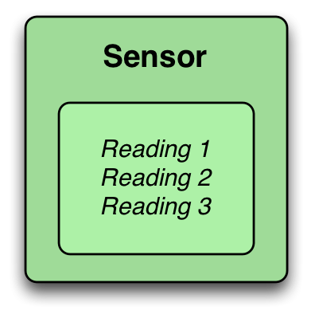
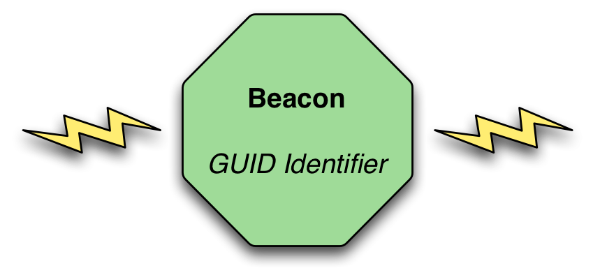
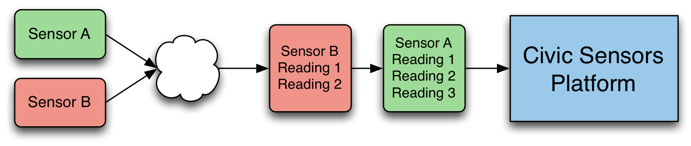

The Civic Sensors platform is split into two main parts, the acquisition of data being published by devices or applications, and the retrieval of data, through various types of searches and aggregations. This document details a high level process for these approaches, although detailed developer documentation should be used for integration purposes.
The Civic Sensors platform handles two main types of objects, a sensor and a beacon. Each of these has different types of characteristics, and is interacted with in a slightly different manner.
Sensors
A sensor is typically a small, embedded devices that is capable of reading one or more values about the environment in which it is placed, and to provide this data to a data service or application for processing. Sensors may be integrated in complex systems (vehicles, structures) or may be independent (water level, temperature) and operating in an isolated manner.

Sensors will generally report one or more values to a service of some sort, and the frequency of reporting varies based on the type of sensor and the need for the data. Environmental sensors may send data infrequently, based on time or specific changes that pass a specific threshold. Complex systems, such as vehicles, will typically use sensor data thousands of times a minute to ensure proper functioning.
Beacons
Beacons are small devices using Bluetooth Low Energy (BLE) for broadcasting a unique identifier to any nearby devices. These devices do not typically have internet access on their own, but instead act as a data source for apps or other BLE-enabled devices to interact with.

There are several Bluetooth Beacon standards, including iBeacon and Eddystone, each with different characteristics and advantages/disadvantages. A basic consideration is that each beacon has a unique identifier, and applications are able to use this identifier to trigger actions, to retrieve information, and to provide context to a user. Although beacons provide location information, as proximity and distance to a beacon, the beacons themselves are not typically GPS enabled and for absolute positioning, an application would need to correlate the beacon with a spatial coordinate.
In order to publish sensor data to the platform, a sensor must first be registered with the system. Although many platforms allow on the fly creation of sensors, with Civic Sensors a basic registration and creation process ensures that some contextual data is available about the sensor, which is useful for other platform users. Understanding the responsible party for a sensor, the type and intent of the data, and other factors is essential to ensuring a wide community is able to take advantage of the information.

The publishing process is rather simple, with a sensor generating an update packet with one or more reading values being submitted to the server. A sensor may not submit readings for all sensor values, if it determines that some have not changed, in order to minimize transmission overhead. These published values are identified by a key or name field, and a sensor is free to use the standard fields on the platform, or to generate new fields as needed.
In order to publish, a sensor device will take the embedded identifier received when registering the sensor, and will use this as a publication identifier. Data may be published through either a REST or MQTT interface, depending on device preferences, and new data is accepted not more than once per minute. Civic Sensors is not designed for extremely high volume data processing, and is intended to provide a broader range of data to the open community, and high volume data is not typically required for this.
Once data has been published in the platform, the update will be visible in the sensor details page, showing last updated values, historical trends, and other characteristics about both the sensor and the readings received. Remember, sensor data is public and available for use by any other users on the platform, so sensitive data or high volume data should be published elsewhere for additional protection.
Beacons are not published into the system, and are managed via the user interface to define a beacon and the context or location it represents. When a beacon is encountered by a mobile application (or other device) it may use the REST API to retrieve information about the beacon, and to understand what the beacon represents.
A beacon may contain content references to notify the user about additional information about a given area. For example, a beacon located at a bus stop may alert a device to schedule information, while a beacon in a park may provide context on a trail, geographic formation, or other details. Beacons may be application-centric as well, providing content or identifiers for applications to use in specific ways.
One feature of beacons is that applications may be written to watch for beacons passively, which minimizes the power usage while providing useful context to the world around the user. Users have proximity detection without the overhead and power drain of performing GPS positioning.